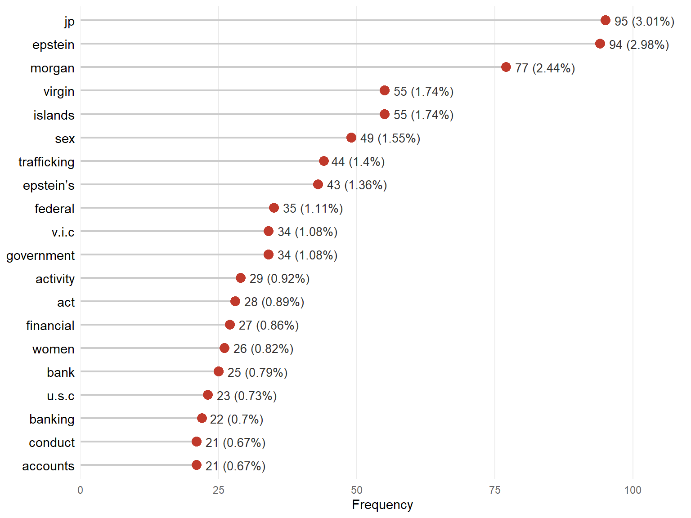
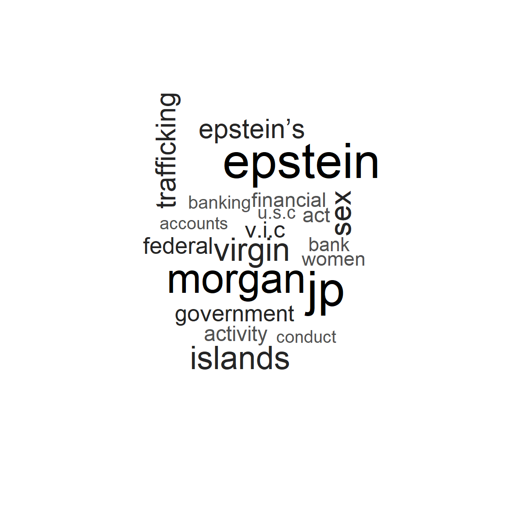
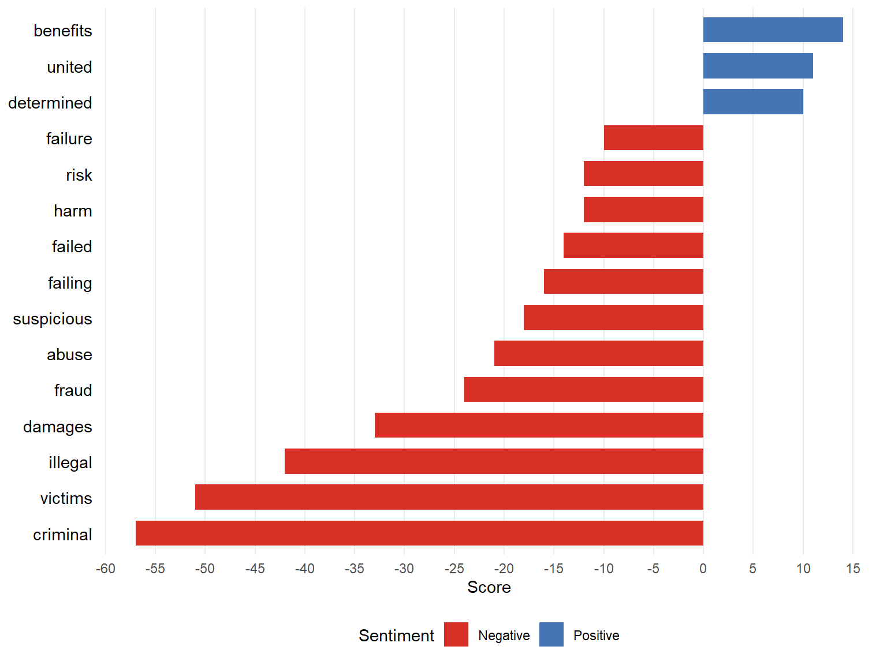
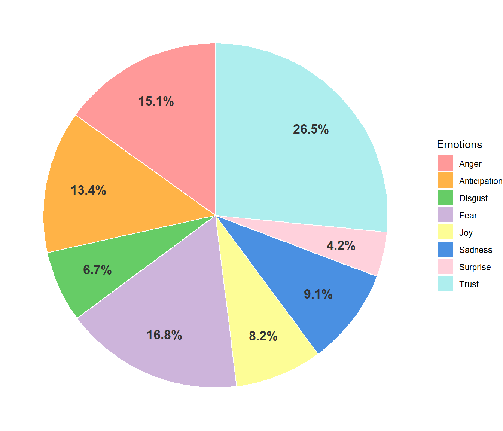
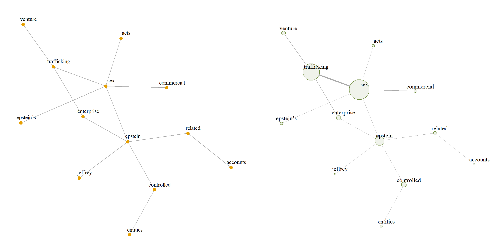
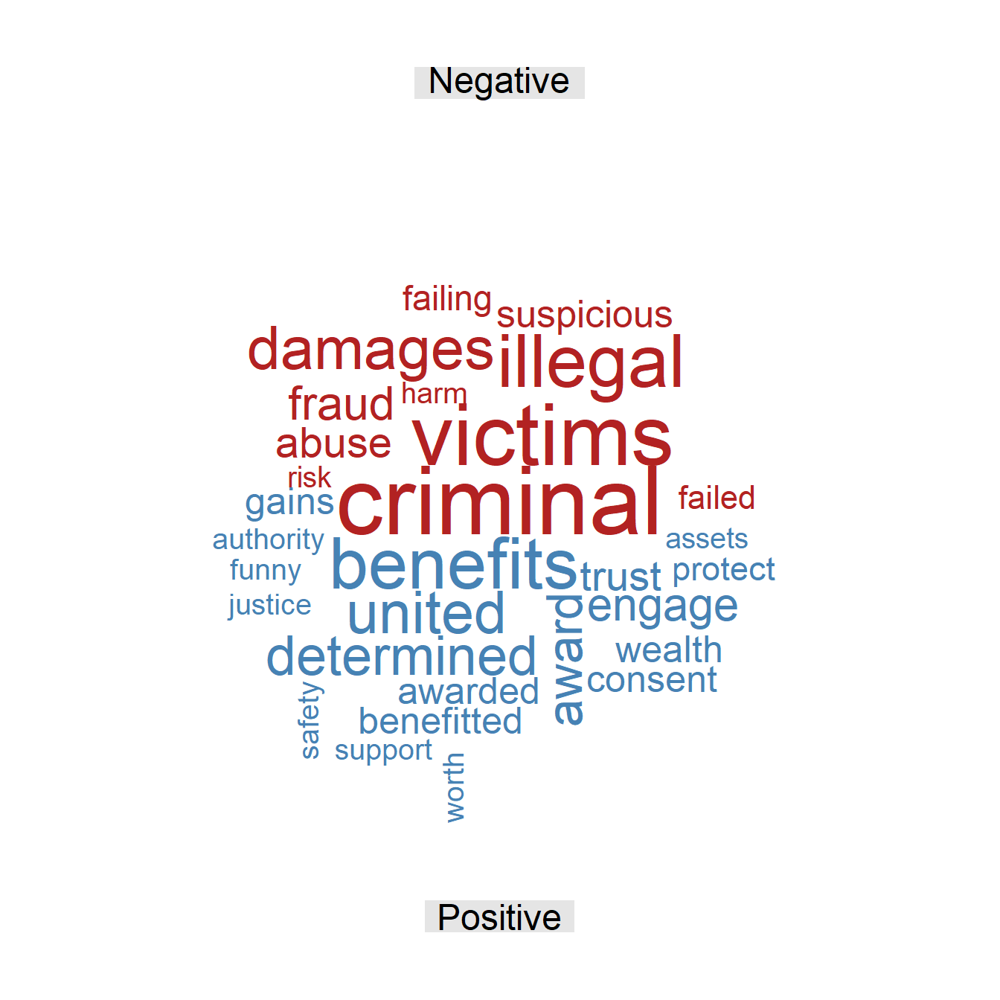
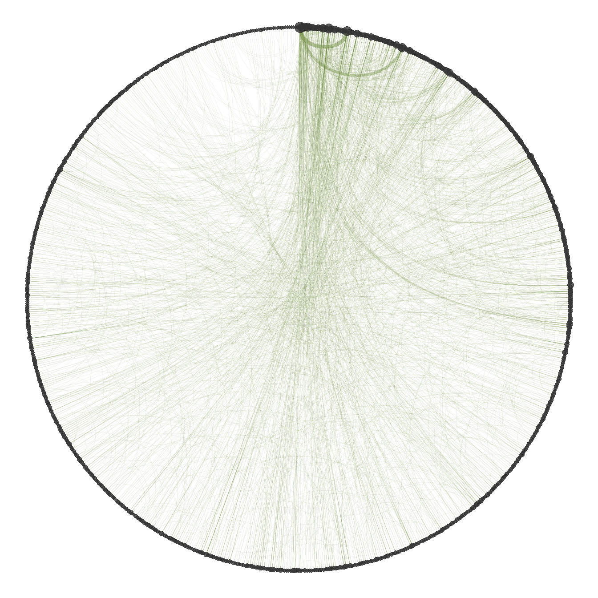
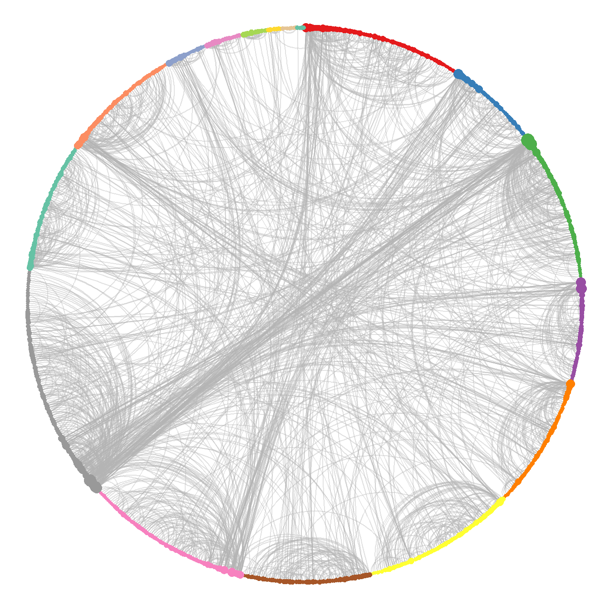

Government of the USVI v. JP Morgan
Civil complaint filed on December 27, 2022
| Document type | Civil complaint |
| Court | U.S. District Court for the Southern District of New York |
| Case number | 1:22-cv-10904 |
| Source | CourtListener |
| Words (cleaned text) | 6,067 |
| Note | Redacted passages appear as blanks in the cleaned text. |
This legal document is a civil complaint filed by the Government of the United States Virgin Islands (USVI) against JP Morgan Chase Bank in the U.S. District Court for the Southern District of New York, under the Trafficking Victims Protection Act, the Virgin Islands Criminally Influenced and Corrupt Organizations Act, and the Virgin Islands consumer fraud and deceptive business practices law. The plaintiff alleges that the financial institution knowingly and negligently facilitated, sustained, and concealed the human trafficking network operated by Jeffrey Epstein for more than a decade, turning his bank accounts into the financial axis used to pay recruiters and victims. The complaint argues that the bank ignored multiple financial alerts, suspicious transactions, and large cash withdrawals linked to the sexual exploitation of women and minors, prioritizing commercial benefits and the high-net-worth clients that Epstein allegedly brought to its private banking division, in coordination with senior executives.
Word frequency
Figure 1 shows the most frequent words in the text. The relative frequency shows that no term stands out disproportionately from the rest. The most recurrent terms refer to the people and institutions involved in the complaint, such as JP Morgan, the Virgin Islands, and Epstein, which act as central actors among whom the narratives of the text are interwoven. The text also refers to the offense of sex trafficking, in which the bank was allegedly complicit, a recurring theme throughout the document. Finally, there are terms related to commercial activities, such as “banking”, “accounts”, and “financial”, which refer directly to how, according to the complaint, the bank collaborated with the trafficking network.
The word cloud in Figure 2 shows terms related to the legal component, such as “U.S.C.”, the abbreviation of United States Code, “V.I.C.”, the abbreviation of Virgin Islands Code, and “federal”. This shows that the document has a solid legal basis when accusing the financial institution of the different offenses. Finally, no additional terms appear compared with the bar chart; that is, the text is markedly concentrated on the terms shown, while the rest are so infrequent that they do not appear.

The frequency analysis identifies the main actors: the bank, the Virgin Islands, and Epstein. It also identifies two central themes of the document: the first covers everything related to the offense of sex trafficking, and the second, how JP Morgan allegedly took an active part by facilitating different financial operations that allowed Epstein to commit the offenses. The language of the text is also highly concentrated around the most frequent terms, around which the different narratives of the case revolve.
Sentiment analysis
Figure 3 shows that negative sentiment has high scores for words such as “criminal”, “victims”, and “illegal”, indicating that their great weight is due to the unlawful nature of the activity they describe. The other words refer to the same, but with lower scores, including terms such as “damages”, “fraud”, “abuse”, “suspicious”, “harm”, and “risk”, which refer directly both to the offenses attributed to the bank for deliberately ignoring certain suspicious conduct and to the abuse suffered by the victims, in which, according to the complaint, the financial institution acted as an accomplice by facilitating Epstein’s financial activities.

By contrast, positive sentiment has only three terms with low scores; moreover, these concepts do not necessarily have a positive connotation in the context in which they are used. The word “benefits” refers directly to the financial advantages attributed to Epstein’s relationship with the bank, in which, according to the complaint, clear warnings were ignored to facilitate the unlawful activities. The word “united” refers to the United States, as part of a proper name rather than as an adjective. Finally, the term “determined” is used to state that certain amounts of damages are to be determined at trial, thus losing its strictly positive meaning.

The emotions present in the document, shown in Figure 4, show that the predominant emotion is trust, which accounts for more than a quarter of the words. This emotion is evoked by the repeated use of formal legal language, characterized by the constant mention of institutions and legal entities. Even so, emotions such as anger and fear carry significant weight; although the text does not dwell on the explicit account of any victim, the mere act of characterizing and listing the alleged offenses is enough for these emotional charges to be highly present in the case.
The sentiment analysis shows that the text has a mostly negative charge, accompanied by emotions such as anger and fear, which contrasts sharply with the absence of a positive side, since its terms are not related to that sentiment in the context of the complaint. Finally, the strong presence of trust shows that the text makes extensive use of formal legal language with frequent mentions of institutions that evoke this emotion; this gives the facts presented a solid legal basis and shows how this regulatory framework is used to seek compensation for the harm caused.
Word relationships
The bigram network was built from the bigrams with a frequency of at least 5, in order to obtain an informative network rather than a noisy one, thus keeping the most relevant information in the text. The analysis uses the largest connected component of the graph, since it concentrates the most relevant information.

Figure 5 shows that the vertices with the highest strength are those related to the offense of sex trafficking, the unlawful act that articulates the actors and ideas in the text. Several terms stand out, such as “commercial”, “enterprise”, and “venture”, which give this offense a commercial component in which, according to the complaint, those involved obtained great economic benefit. One of the vertices that articulates several relationships in the graph is “Epstein”, to whom the complaint attributes the ownership of the trafficking network and of bank accounts closely related to the alleged offenses. Finally, there are no vertices that explicitly refer to the defendant or to the plaintiff, which indicates that the central theme is sex trafficking and that the person who coordinated the whole scheme, according to the complaint, is Epstein.
The bigram network shows that sex trafficking is the central theme that articulates the different narratives throughout the text, and that one of the most important features of this offense, as framed in the complaint, is its nature as a business in which the parties obtain an economic benefit. The actor who links and centralizes the narrative is Epstein, the only person who appears in the main connected component of the graph, so the most relevant themes of the document revolve around him. Finally, the absence of the plaintiff and the defendant stands out, from which it can be concluded that, in the textual structure analyzed, they are not as prominent as Epstein.
The skipgram network is built with all pairs, regardless of their frequency, which makes it possible to find semantic relationships that are not perceptible at first sight. The largest connected component is also used, since it contains the most important information and allows the computation of statistics that are not defined on a disconnected graph, such as the mean distance between vertices.
| Word 1 | Word 2 | Freq. | Rel. freq. |
|---|---|---|---|
| JP | Morgan | 77 | 2.46% |
| Virgin | Islands | 55 | 1.76% |
| Sex | Trafficking | 32 | 1.02% |
| JP | Morgan’s | 18 | 0.58% |
| Federal | Banking | 17 | 0.54% |
| Sex | Venture | 15 | 0.48% |
| Trafficking | Venture | 15 | 0.48% |
| Underage | Girls | 15 | 0.48% |
| Banking | Regulations | 14 | 0.45% |
| Federal | Regulations | 14 | 0.45% |
Table 1 shows the most frequent skipgrams. None of them has a disproportionately high relative frequency; that is, no pair of words stands out on its own from the rest. The two most frequent skipgrams are those referring to the defendant and to the plaintiff, which are recurring actors in the narrative of the text. Pairs such as “sex trafficking”, “sex venture”, and “trafficking venture” also stand out, which refer directly to the alleged trafficking network and to its operation as a highly profitable business, confirming the weight of this theme in the case. Finally, skipgrams referring to the unlawful conduct in the financial sector stand out, such as “banking regulations”, “federal regulations”, and “federal banking”, which refer directly to the violations of different regulations that the bank allegedly committed to facilitate Epstein’s transactions.
| Statistic | Value |
|---|---|
| Mean distance | 4.89 |
| Mean degree | 4.65 |
| SD of degree | 7.02 |
| Clique number | 6.00 |
| Density | 0.01 |
| Transitivity | 0.10 |
| Assortativity | -0.07 |
| Word | Centrality |
|---|---|
| JP | 1.00 |
| Morgan | 0.96 |
| Morgan’s | 0.22 |
| Trafficking | 0.15 |
| Knowingly | 0.14 |
| Epstein | 0.12 |
| Sex | 0.11 |
| Enterprise | 0.11 |
| Accounts | 0.10 |
| Venture | 0.08 |
Table 2 shows that the mean distance of the network is 4.89; that is, on average, almost five steps are needed to go from one word to another. Being a moderate value, it suggests a less centralized narrative, in which the different concepts and actors are connected more gradually throughout the text. This interconnection is supported by the mean degree of 4.65, meaning that each word is directly connected to between four and five different terms on average. However, the standard deviation of the degree is high (7.02) compared with its mean, which reveals great variability: a few words are connected to many others, while most have very few connections. In other words, there are hub words that appear next to many different terms, which points to very marked themes in the text.
Regarding the grouping of words, the clique number is 6, meaning that the largest group of words that are all connected to each other has 6 terms; such a structure usually reflects a frequently repeated central argument or words that always appear together. At the global level, however, the density of the network is 0.01, meaning that only 1% of all possible connections are present; the network is therefore very sparse, as is usual in word networks with a large and varied vocabulary. Consistently with this sparsity, the transitivity is 0.10, so there is only a 10% probability that two words connected to the same term are also connected to each other (forming triangles), which reflects a structure with low cohesion. Finally, the degree assortativity is negative (-0.07), indicating a very weak tendency of highly connected words to link with words that have few connections, rather than with other central words.
Table 3 shows the terms with the highest eigenvector centrality in the network. Notably, the first two vertices, “JP” and “Morgan”, have much higher values than the rest. This suggests that the financial institution is the structural core and the main thread on which the complaint is built. Terms with high centrality directly linked to the characterization of the offenses as a structured business also appear, such as “trafficking”, “sex”, “enterprise”, and “knowingly”, which reinforces the complaint’s argument that the bank was fully aware of the alleged unlawful business model. Finally, the appearance of “Epstein” and “accounts” stands out, making the financial relationship between Epstein and the bank the axis of the key narratives of the case.
| Cluster | Size | Word | Strength |
|---|---|---|---|
| 1 | 77 | Act | 73 |
| Bank | 53 | ||
| Victims | 38 | ||
| 3 | 73 | JP | 231 |
| Morgan | 169 | ||
| Morgan’s | 53 | ||
| 6 | 74 | Government | 37 |
| Court | 19 | ||
| Pursuant | 19 | ||
| 8 | 81 | Activity | 69 |
| Conduct | 47 | ||
| Criminal | 43 | ||
| 9 | 113 | Epstein | 164 |
| Trafficking | 129 | ||
| Sex | 122 |
Table 4 presents the words with the highest strength in the five largest clusters obtained with the fast greedy algorithm. Clusters 1 and 3 show terms related to the financial institution and to how, according to the complaint, it deliberately ignored multiple alerts in order to keep doing business with Epstein and his alleged trafficking network. Cluster 6 shows the use of formal legal language (“government”, “court”, “pursuant”) to give a solid procedural basis to the description of the alleged offenses. Finally, clusters 8 and 9 refer to the alleged criminal conduct and to how it relates Epstein and the financial institution, with sex trafficking as the central offense that articulates all the other alleged crimes and the relationship between the bank and Epstein.
Additional figures


